ICPS 2025 features a strong set of keynote talks and tutorials addressing current challenges and developments in modern power and energy systems. The sessions cover grid operations, renewable integration, electricity markets, energy storage, digital substations, cyber security, data-center-driven demand growth, and emerging AI applications in the power sector.
The program brings together experts from industry, government, and academia to share practical insights, recent initiatives, and technical advancements. Participants will gain a focused understanding of key trends shaping future power systems and the skills needed to work with new technologies and operational approaches.
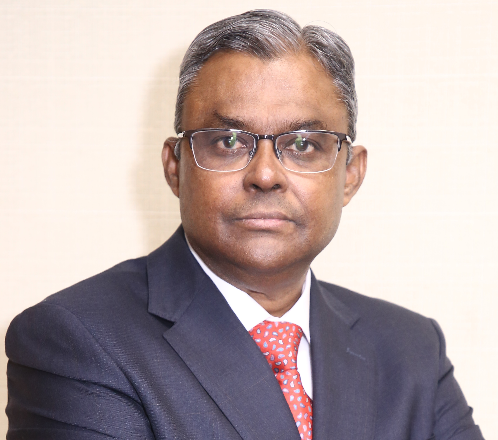
Shri. Samir Saxena
Chairman & Managing Director, Grid Controller of India
Steering towards Green and Resilient Grid: Insights from Power System Operations
Shri. Samir Chandra Saxena is the Chairman and Managing Director (CMD) of Grid Controller of India Limited (GRID-INDIA), since 1st May 2025, formerly known as Power System Operation Corporation Limited (POSOCO). Prior to this assignment, he was Director (Market Operation), in the same company from July 2024. He is a Fellow of the Institution of Engineers (India), Senior Member IEEE and Distinguished Member CIGRE. He obtained his Bachelor's Degree in Electrical Engineering from Aligarh Muslim University and MBA from Indian Institute of Technology, Delhi and has also completed a Certificate Course in “Regulation of Power Sector” from the Florence School of Regulation, Italy. Shri Saxena has about 30 years of experience in diverse areas comprising of Power Market Operations, Power System Operations, Power Exchange Operations, Electricity Market Design, Regulatory Affairs, Integration of Renewables, REC markets design & operations, and SCADA-IT system and has also served as the head of National Load Despatch Centre (NLDC). Shri Saxena has been actively associated with the development of the regulatory framework for integration of Renewables, implementation & development of Ancillary Services, Fast Response Ancillary Services and Market Based Ancillary Services. He was responsible for the implementation of the Real Time Market (RTM) and Integrated Day Ahead Market (including Green Day Ahead Market). He has been associated with the implementation of Security Constrained Economic Despatch (SCED) at inter-state level in India. He also led a pilot study for intra-state SCED implementation with multiple states. He has led the team for implementation of the National Open Access Registry (NOAR), a one stop portal for administration of the Short Term Electricity Market in India. In 2023, as Head of the National Load Despatch Centre, he has led the implementation of Market Based Ancillary Services and the implementation of IEGC 2023. He has also been associated with the capacity building of Power System Operators and the System Operator Certification Programs. He represents India in the CIGRE Study Committee C5 on Electricity Markets and Regulation and has many publications related to his work areas in various national and international journals & conferences.
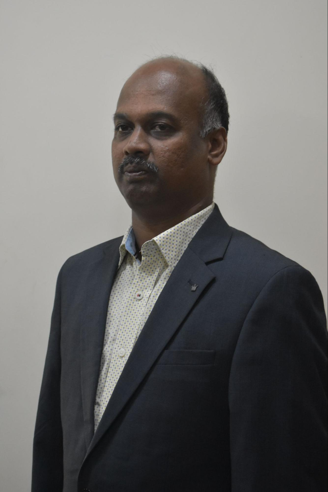
Shri. Vinoth Kumar K.
Principal R&D Engineer, Hitachi Energy Technology Services Private Limited
VSC HVDC- A Game Changer for Integration of Renewables
Shri Vinoth Kumar K. is the global technical lead for future MTDC Grids and DC Breakers. He has wealthy experience in the area of future HVDC technologies like DC GRIDS, DC BREAKER, AC to DC Transmission refurbishment, Hybrid DC grids with a mix of VSC and LCC HVDC terminals and their series configurations, line fault locators. He also has the additional role of a project manager playing the leadership role towards implementation of organizational strategies to achieve the business goals. He was a working group member for preparing IEEE P2800.2, IEEE P3105, and CIGRE B4.96 Standards. He holds two patents that have already been granted. Eight more patent applications have been filed on his name. He also has around 42 publications in reputed journals and conferences proceedings. He is one of the recipients of the IEEE PES Narain G Hingorani Award for HVDC Systems in 2025.
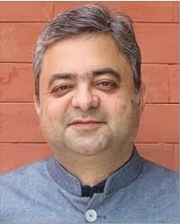
Prof. Mohammad Rihan
Director General of National Institute of Solar Energy (NISE), Ministry of New and Renewable Energy (MNRE), Government of India.
Transitioning to Low-Carbon Solar Dominated Indian Power Grid: Initiatives, Challenges and Opportunities ahead
Dr. Mohammad Rihan is a Professor of Electrical Engineering presently serving as Director General, National Institute of Solar Energy, an autonomous institute of Ministry of New and Renewable Energy, Government of India. As DG, NISE he is leading R&D, consultancy, testing and standardisation, and capacity building for the Solar and Green Hydrogen sectors in line with the National policies and requirements. He is serving as Chairperson of the sectional committee of BIS on Solar Energy also. He has written a textbook on 'Green Energy and Sustainable Development' published by Cambridge University Press (UK) and another book on Green Energy Transition in India-Including the success story of AMU. He had led the integration of 6.5MWp solar PV plants in the AMU campus distribution grid; the largest such installation in any academic institution in the country. He is an Elected Fellow of the IET(UK), IE(India), and IETE. He is also a Senior Member of IEEE and Chair-Elect of executive committee of IEEE UP Section and Vice Chair of executive committee of Delhi local network of IET(UK).
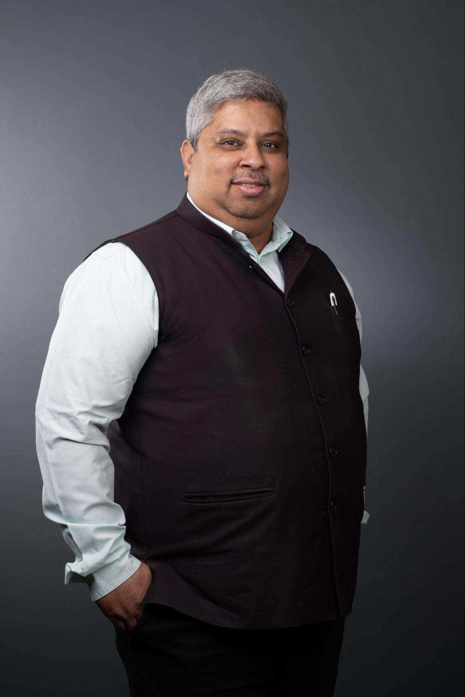
Dr. Rahul Walawalkar
President, Netzero Energy Transition Association (NETRA)
Connecting the Dots: Partnership to Scale Smart, Clean and Secure Power Systems
Dr. Rahul Walawalkar is a global clean-tech strategist with over 25 years of experience across energy storage, smart grids, e-mobility, and power system flexibility. He serves as President of the Netzero Energy Transition Association (NETRA), a global industry association focused on accelerating the commercialization and large-scale deployment of net-zero technologies through cross-border collaboration. He is also President of Walawalkar Enterprise LLP, a strategy and advisory firm working with utilities, regulators, investors, and technology providers on grid modernization and clean energy integration. Dr. Walawalkar has contributed to pioneering policies and roadmaps for energy storage and flexible resources in India and internationally, and has advised on multiple gigawatt-scale projects spanning storage, renewable integration, and industrial decarbonization. He has been recognized with several honors, including the IEEE PES Hingorani Award, for his leadership in advancing clean, reliable, and economically viable power systems.
Shri. Sushil Kumar Soonee
Former and founder CEO POSOCO, now Grid-India; Retd
From Intra-State SCED to National-Level Optimization: A Roadmap for India's Power System Economy
(Followed by an interactive session entitled "Resource Adequacy Planning to Real-Time SCED: Building India's Optimized Power System")
Shri S.K. Soonee, former and founding CEO of POSOCO (now Grid-India), has over four decades of experience in power system operations across India's regional grids. He played a pivotal role in grid integration, leading to the formation of the National and SAARC Grids. Soonee is an expert in power system operations, planning, commercial aspects, and governance, with a focus on electricity markets, renewable energy integration, transmission pricing, and SCED. A Fellow of IEEE, INAE, and a Distinguished Alumnus of IIT Kharagpur, he has represented India on CIGRE Committees and is recognized internationally for his contributions.
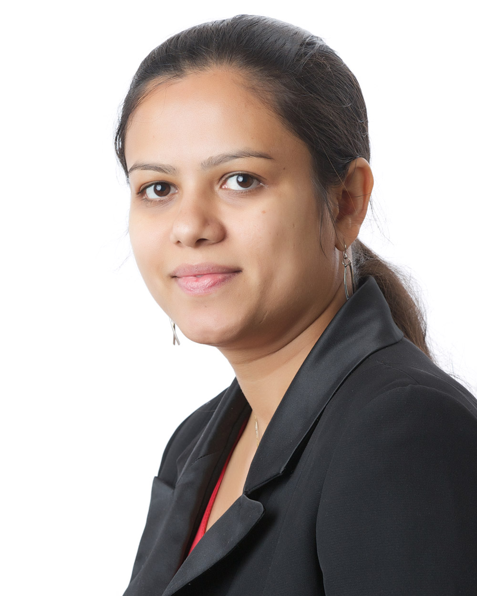
Dr. Palak Parikh
Senior Engineer-Power System, Vernova Research Center, GE Vernova, Canada
Strain to Synergy : Powering the NextGen Data Centers
Dr. Palak P. Parikh is a Senior engineer at GE Vernova Advanced Research Center, specializing in electrical engineering with over 13 years of industry R&D experience in grid automation and emerging energy technologies. She has worked with GE Vernova renewable energy and grid automation businesses, leading application design and technology partnerships for advanced grid modernization programs. Her recent work focuses on data center power systems, AI-ready energy architectures, and digital automation infrastructure, bridging the convergence of IT and OT domains. Her expertise includes renewable and DER integration compliance studies, distribution automation system design, and IEC 61850-based intelligent electronic devices. Dr. Parikh earned her Ph.D. in electrical engineering from the university of western Ontario, Canada, and has authored over 20 international journal and conference publications. She also holds several patent applications in energy and automation technologies.
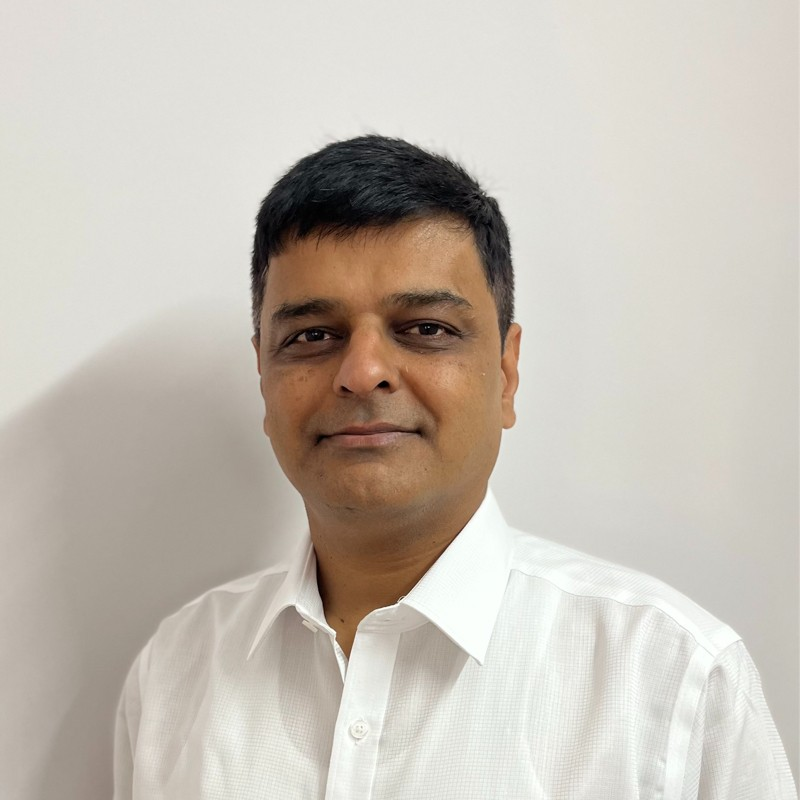
Shri Dillip Kumar Guru
EVP (Energy and ESG), Sify Technologies Limited, Singapore (Data Centre)
Managing the rapid growth of AI while ensuring reliability, resilience, and sustainable infrastructure planning
Shri Dillip Kumar Guru is a power systems professional with extensive experience in grid planning, operational strategy, and digital transformation initiatives across India and APAC. His work spans the integration of AI, large-scale renewable energy, and emerging technologies into utility operations. Dillip has been closely involved in advising utilities and data-centre developers on grid readiness, demand forecasting, and AI adoption . At this conference, he brings his perspective on how the power sector can proactively manage the rapid growth of AI while ensuring reliability, resilience, and sustainable infrastructure planning.
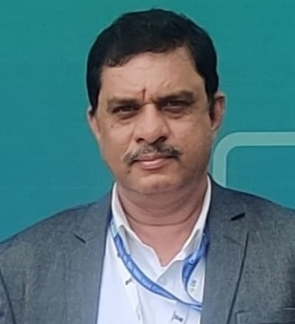
Shri M. K. Ramesh
Chief General Manager (CGM), SRLDC, Grid India
Challenges in SR Grid Operation
Shri.M.K.Ramesh received his B-Tech degree in Electronics & Communication from GCT Coimbatore, Tamil Nadu. Later, he completed his M-tech in Data Science Engineering from BITS Pilani. He also earned an MBA (Finance) degree from Bangalore University.
Shri.M.K.Ramesh started his career in Power Grid Corporation of India Ltd, LD & C Department New Delhi in the Engineering Design of Load Dispatch and Communication Project. He played a major role in the implementation of various projects like SCADA/EMS, Wide Area Measurement (URTDSM) and REMC Renewable Energy Management Centre. As the Head of Department for Real time system Operation at SRLDC, he handled the operation of SR GRID, Renewable Energy. During 2018-2021, when he was the Head of Department for System Logistics in the Northeastern Regional Load Despatch Centre, Shillong, he successfully completed WAMS Project and Introduced VSAT technology for real Time SCADA in Arunachal Pradesh, Meghalaya SLDC. After completing 33years service in the Power Sector, he is, presently, Heading the Southern Regional Load Despatch Centre, where he leads the team of Grid Operation, Scheduling ,Transmission Constraints, Market Operations, and Regulatory Management in line with MOP, CEA and CERC guidelines.
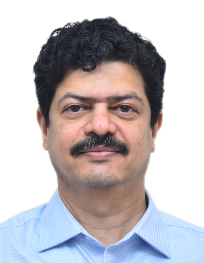
Prof. Abhijit Abhyankar
Indian Institute of Technology, Delhi
Features and Future of Transmission Pricing
Electricity transmission pricing is fundamental to ensuring efficient, reliable, and equitable use of the power grid. Sound transmission pricing frameworks generally follow a set of core principles such as: cost recovery for transmission licensees, cost-causation-based allocation of charges, non-discriminatory open access, and transparent regulatory oversight. Over time, systems worldwide have evolved from simple energy-based charges to more sophisticated approaches that reflect actual network usage, distance, direction of flows, congestion, and losses. These changes aim to allocate costs fairly, send efficient economic signals, and support grid sustainability—especially as transmission networks expand and integrate large volumes of renewable energy with variable, bidirectional flows.
In India, the transmission pricing regime has undergone a significant transformation. In the earlier decades, charges were allocated largely on simple energy-based formulas or fixed shares of central generating station outputs. The Electricity Act, 2003 catalyzed reform by promoting open access and regulatory oversight, leading to more transparent and cost-reflective pricing. The introduction of the Point of Connection (PoC) mechanism in 2011 marked a major shift toward usage- and flow-based tariff allocation for inter-state systems. Subsequent refinements in the CERC Sharing Regulations (2020) further aligned charges with grid utilization patterns. As India's grid continues to expand and integrate high levels of renewable generation, future transmission pricing is expected to become more dynamic and granular, potentially incorporating locational signals, congestion components, and marginal-cost-based principles to ensure economic efficiency and long-term grid resilience. This talk is expected to cover the above aspects of transmission pricing.
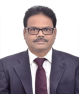
Dr. Kaliappan Perumal
Additional Director, Central Power Research Institute, Bangalore
Synchrophasors for Real Time Monitoring of Smart Grids
India is the world's third largest carbon emitter and has committed to achieve net zero emissions by 2070. India is aiming to achieve installation of renewable energy of 500 GW by 2030 and over 600 GW by 2032. There are plans for expanding the existing transmission network, integration of energy storage solutions and supporting green hydrogen hubs which are identified in different states of India. The modern power system is highly interconnected with various generation sources. Monitoring, protection and control actions play very important role to help the system operator to reliably operate the grid. The system operator experiences different challenging scenarios in the contemporary power grid. The existing power system grid is well operated and controlled by well-known supervisory control and data acquisition (SCADA) system. The drawbacks of the SCADA systems are poor visualization, lack of time stamping, unable to provide accurate estimate of the system states, and poor situational awareness. Therefore, the existing monitoring system is not adequate to monitor the modern power grid. On the other hand, synchrophasors are intelligent electronic devices, which normally provide synchronized voltage phasor, current phasor, frequency and rate of change of frequency measurements. Synchrophasors, also known as phasor measurment units (PMUs), are an integral part of smart grid implementation plan. Synchrophasors are installed in the generating station, HVDC system, intertie line, and interstate transmission system. Those are also installed at the renewable energy collection substations. PMU data are used for wide area monitoring, protection and control (WAMPAC).
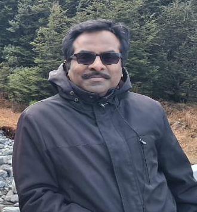
Dr. Gurunath Gurrala
Indian Institute of Science, Bangalore
Parallel programming for Large Power system studies (hands-on session)
Introduction to parallel computing, Different memory models in parallel programming, Introduction to shared memory paradigm using OpenMp, Matrix-Matrix multiplication using OpenMp, Load flow studies in power system, Parallel load flow using OpenMP.
Note: Should bring your own laptop with minimum 8GB ram. Windows or linux.
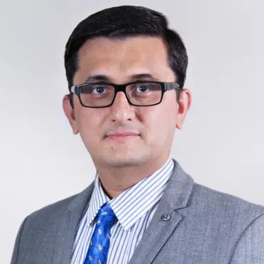
Dr. Mital Kanabar
PowerProfs Inc., Markham, Ontario, Canada
Industry Experiences in Accelerating Open Innovation and Cyber Resilience for the Digital Power Grid
Digital transformation of the electric power grid is essential to accelerate open innovation with data-driven AI to support the energy transition. Yet the power grid continues to face slow innovation cycles driven by proprietary vendor ecosystems, hardware-defined grid automations, and restricted access to secure, high-quality operational data. These limitations hinder experimentation, complicate integration of advanced analytics, and reinforce long-term technology lock-in.
At the same time, cybersecurity risks are intensifying on the current digital implementations. Recent power-grid cyber attacks demonstrated how power substation components—including protection relays, HMIs, engineering workstations, and remote access channels—can be compromised through structured attack chains.
From several years of industry experience, it is proposed to build open-innovation (non-proprietary) and cyber-resilient solutions considering the use-case of IEC 61850-based digital substations. This session provides a focused examination of: (1) why adoption in digital substations remains slow; (2) where cyber vulnerabilities persist today; and (3) how real-world attack scenarios map to known adversarial techniques (explained using MITRE ATT&CK framework). The session then provides a real-world case-study on open innovation demonstration—supported by open-source frameworks (e.g., Linux Foundation Energy) for the virtualized or software-defined substation automation solutions.
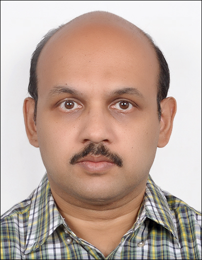
Dr. Sarasij Das
Indian Institute of Science, Bangalore
Cyber Security in Digital Substations
Increasing digitization is making substations more vulnerable to cyber attacks. In this tutorial, at first, I'll discuss the IEC 61850 based architecture of digital substations. Then, various types of cyber attacks possible in a digital substation with some real life experiences will be shared. Finally, cyber security measures suggested by IEC 62351 and IEC 62443 will be discussed.
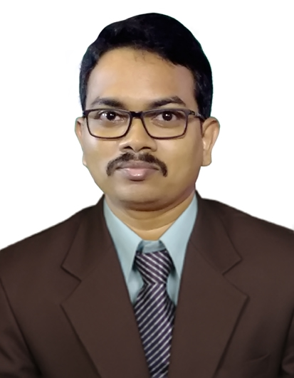
Dr. Pamulaparthy Balakrishna
GE Vernova
AI and the Future Grid: How Power Engineers Can Lead the Next Technological Transformation
The electric power grid is undergoing an unprecedented transformation driven by the convergence of digitalization, decentralization, and decarbonization. Artificial Intelligence (AI) has emerged as a pivotal enabler of this evolution, empowering utilities, and industries to achieve higher levels of reliability, efficiency, and resilience. This talk explores how AI is reshaping the architecture, operation, and management of modern power systems—spanning applications across transmission and distribution of power grids. Beyond technology, it emphasizes the evolving role of power engineers as leaders in data-driven decision-making, system modelling/analysis, and cyber-physical integration with a detailed case study on one of the key problem statements. By blending domain expertise with AI literacy, power engineers can guide the transition toward an intelligent, explainable, and responsible solutions for utilities and industries. Ultimately, it argues that the next technological transformation in the grid sector will succeed not merely through innovation in AI algorithms or technology, but through the adaptability of the power engineers along with domain skillsets who implement them.
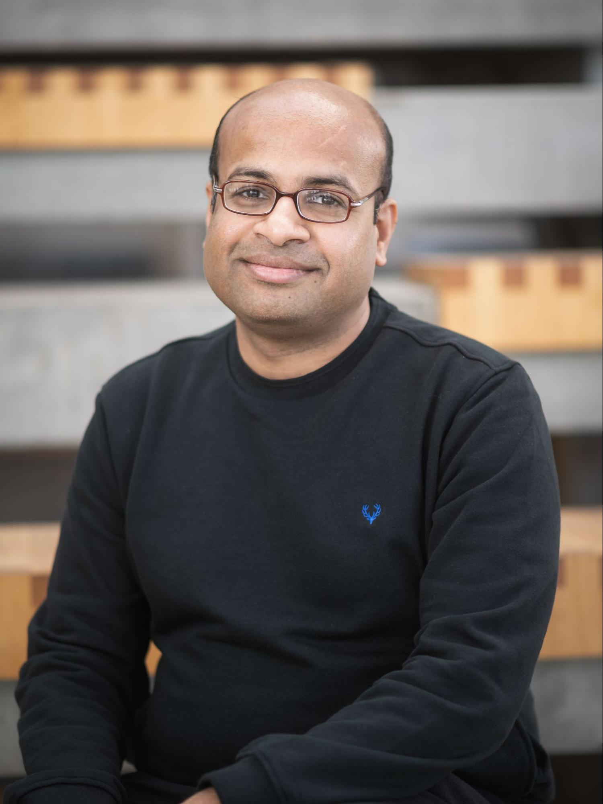
Dr. Ramakrishnan Maheswari
University of Southern Denmark, Denmark
Small DC-link capacitor-based power converter topologies and related issues.
Power electronics converters are essential to the green energy transition. Therefore, the penetration of power converters for various applications is increasing, and they are required to meet regulatory requirements. These requirements affect the size of the active and passive components used in the converter. The first part of the tutorial addresses the requirement for the design of the converter and how it affects the selection of the passive components. These components are the main factor that decides the size, weight, and volume of the drive. They may typically contribute to 75% of the weight and volume of the converter. For these converters, the DC-link capacitor is the major contributor among the passive components. To reduce the size of converters, a reduction in the value of DC-link capacitance is an alternative. Such alternate converters can be classified as small DC-link capacitor-based power converters. The second part of the tutorial focuses on conventional power converter topologies (two-level and three-level converters) with small DC-link capacitors and related issues such as negative impedance instability and mid-point voltage balance in the three-level converter. Furthermore, the tutorial also discusses some small DC-link capacitor-based power converter topologies that utilize current injection circuits for grid-connected applications. These converters have the advantage of high efficiency and high power density. The main target audience for the tutorial is active researchers, PhD students, and working professionals from the industry in power electronics converters for electric drives. However, the topics will be presented in a way that the fundamentals can be applied to other AC-DC power converter applications as well.
Chairman: Shri. Sushil Kumar Soonee, Former and founder CEO POSOCO, now Grid-India; Retd
Shri. Sushil Kumar Soonee
Former and founder CEO POSOCO, now Grid-India; Retd
Shri S.K. Soonee, Sushil Kumar Soonee is the Founder and former CEO of POSOCO (Grid India). He holds a degree in Electrical Engineering from IIT Kharagpur. With over four decades of experience in India's power sector, he has played a pivotal role in integrating state/regional grids into the unified National Grid and in cross-border interconnections. He has been instrumental in electricity-market design, renewable-energy integration, and strengthening system-operation frameworks in the country. Shri Soonee continues to guide India's power sector through advisory roles and thought leadership in grid governance and economy & energy transition initiatives.
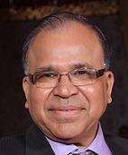
Shri. Vinod Kumar Agrawal
Former Ed, Grid-India
Shri Vinod Kumar Agrawal is the former Executive Director at Grid India, where he has led key national and regional grid-operation functions. He holds an M.Tech degree in PAS from IIT Delhi. With over four decades of experience in India's power sector, he has contributed immensely to system operation, grid management, and RE integration in the country. Shri Agrawal has been closely associated with the cross- border cooperation activities amongst the countries in South Asia through USAID SARI/EI Program and he continue to support the power sector in India through advisory and technical leadership roles.
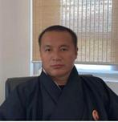
Shri. Sherub
CEO, BPSO, Bhutan
Shri Sherub is the Chief Executive Officer of Bhutan Power System Operator (BPSO), responsible for national grid management and system operations. With extensive experience in power-system operation, he leads Bhutan's grid stability, load dispatch, and cross-border electricity coordination. Under his leadership, BPSO has strengthened technical collaboration and knowledge exchange with regional power operators and he continues to drive Bhutan's strategic energy-sector development.
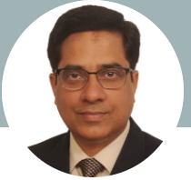
Shri. Vivek Pandey
Chief General Manager, LDC, Grid-India
Shri Vivek Pandey is the Chief General Manager at Grid Controller of India Ltd. (Grid-India). He holds a degree in Electronics & Power Engineering from VNIT Nagpur and an MBA in Technology Management from IIT Delhi. With over two decades of experience across national and regional load dispatch centres, he has been instrumental in grid reliability and electricity market operations. Shri Pandey played a key role in India's unified national grid formation and several major system improvement initiatives.
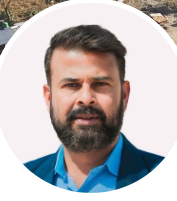
Shri. Chandan Ghosh
Director, NEA, Nepal
Shri Chandan Kumar Ghosh is the Director of the Power System Management Department at the Nepal Electricity Authority. He holds a Bachelor's degree in Electrical & Electronics Engineering and a Master's in Electrical Power Engineering from Kathmandu University. With over two decades of experience in Nepal's power sector, he has led major transmission-line and system-operation projects and also plays a key role in cross-border electricity coordination. Shri Ghosh has been central to NEA's recent power-trade achievements, including Nepal's landmark electricity export to Bangladesh.
Chairman: Dr. Sridevi, Director General, Central Power Research Institute
ICPS 2025 is happy to host a Women in Engineering (WIE) panel featuring distinguished leaders from research, industry, system operations, and advanced technology domains. The session highlights the contributions, challenges, and future pathways for women shaping the global power and energy landscape.
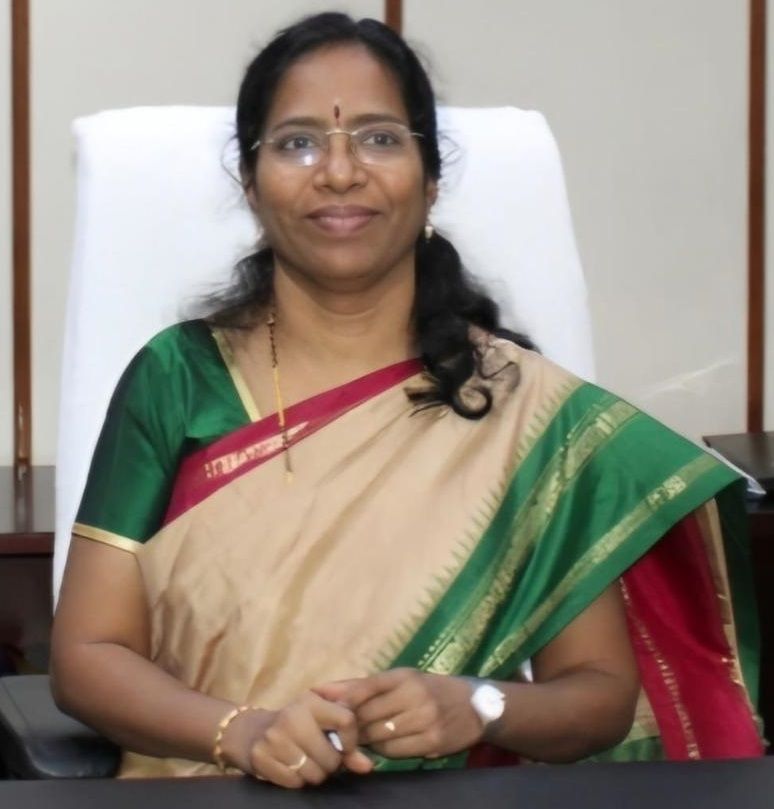
Dr. Sridevi
Director General, Central Power Research Institute
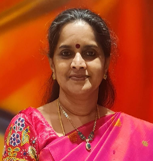
Smt. S. Usha
Executive Director, NLDC
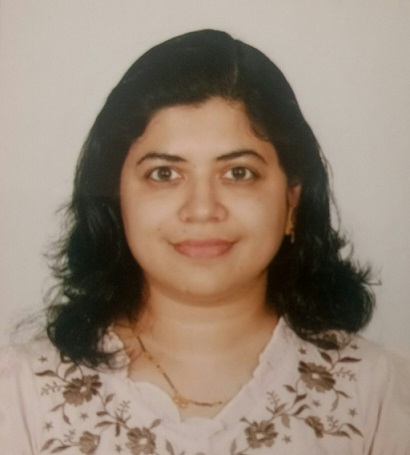
Smt. Vaibhavi Kale Mishra
Senior Product Security Leader, GE Vernova
Dr. Palak Parikh
Senior Engineer - Power Systems, Vernova Research Center, GE Vernova, Canada
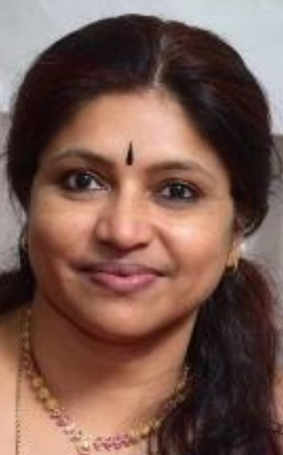
Smt. Kavitha C. K
Deputy Chief Engineer (GRID), SLDC, Kerala State Electricity Board Limited
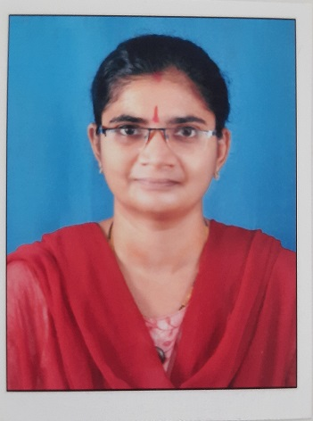
Dr. A. Hema Latha
Assistant Executive Engineer in APTRANSCO, Vijayawada, India